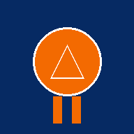

Sposta o elimina oggetti di un PDF (un punto di controllo di una mappa, una scritta, una foto) e sostituisci le foto senza ricomprimerle. Il resto della pagina non viene toccato. Tutto sul dispositivo, niente caricamenti.
oppure tocca per sceglierlo dal dispositivo